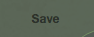
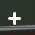
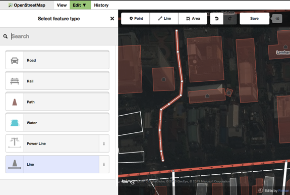

iDエディタ
idエディタは2013年に新しく公開された、OpenStreetMapのためのブラウザベース編集アプリケーションです。 OpenStreetMapの編集を非常に簡単に行うことが可能です。iDは動作が軽く、操作も簡単で、航空写真やGPS、Field Papersなどさまざまな情報を使って地図を作成することができます。
iDエディタは小規模でそれほど込み入っていない編集を行なうことに適しており、JOSMのように複雑な操作を覚える必要がありません。この章では、iDを使った基本的な編集操作について解説を行います。
iDエディタの起動
- iDを使うには、インターネットへの接続が必要です
- ブラウザを起動し、OpenStreetMapのウェブサイト http://www.openstreetmap.org を表示してください。
- OpenStreetMapアカウントを使って ログイン を行います
- 編集の対象となる場所まで表示を移動させ、ズームします
- 編集 ボタンの右側にある小さな三角形をクリックし、そこから iD (ブラウザ内エディタ) で編集 を選択します
iDエディタのユーザインターフェース
- 地物パネル: 地図上で選択したオブジェクトに付与されているタグが表示されます。 このパネルから、タグの追加や編集が可能です。
- ツール: 基本的な編集ツールが表示されるパネル:
- ポイントを描く

- ラインを描く

- シェイプ(ポリゴン/面)を描く
- やり直し

- やり直しの取り消し

- 変更の保存 
- ポイントを描く
- マップパネル: 各種設定を行なうためのパネル:
- ズームイン 
- ズームアウト

- 現在地を表示

- 背景画像レイヤを変更

- ヘルプメニューを表示

- 情報パネル: このパネルには多くの情報が表示されます。例えば、表示中の地域を過去に編集したユーザの一覧などです。
背景画像レイヤの変更
データの編集を始める前に、背景の画像を変更することが可能です。
- 背景画像設定 のボタンをクリックします

- 以下のようなパネルが表示されます:
- 以下のボックスから 輝度調整 の設定値を変更可能です:

- 輝度のレベルは3段階から選択できます。 100%、50%、そして0%です。それぞれのボタンをクリックしてみて、どのくらい画像が変わるかを確認してみてください。
- また、 背景図レイヤを切り替える ことも可能です。これにより、任意のタイル画像を背景図として利用することが可能です(デフォルトはBing衛星写真)。表示されているオプションからいくつか選択してみてください。
- また、 カスタム の項目を選択することで、独自のタイルを追加することもできます
例えば Field Papers の画像を追加したい場合、 カスタム を選び、以下のようなかんじで、あなたが作成した Field PapersのスナップショットURL を記入してください:
http://fieldpapers.org/snapshot.php?id=cqhmf2v9#18/37.80593/-122.22715
- コンピュータに保存されているGPSトラックを表示させる ことも可能です。(GPX形式ファイル) この操作はとても簡単で、単にGPXファイルをiDエディタにドラッグするだけです。
- もし画像オフセットがある場合、背景画像をずらすことで 画像のオフセットを修正 することが可能です。
- 背景画像をずらすには、ナビゲーションボタンををクリックしてください。リセットボタンをクリックすると、画像の位置をデフォルトに戻すことができます。

iDを使った編集の基礎
iDによる編集を行う前に、 あなたが現地をよく知っている場所まで、表示を移動させましょう。 マウスの左ボタンをクリックしながら動かすことで、表示されている領域を移動させることができます。
ポイント情報の追加
- あたらしくポイント情報を追加するには、 ポイント ボタンをクリックします。
- マウスのカーソルが、プラス(+)の形に変わります。その状態で地図をクリックすると、その場所にポイントデータが作成されます。例えばあなたが病院がある位置を知っている場合、その病院の建物の位置をクリックしてください。

- 新しくポイントが作成されます。作成と同時に画面左側へパネルが表示され、そのオブジェクトがどのような属性を持っているかを選択することが可能になります。 病院 をクリックして、そのポイント情報を病院、としてタグ付けしましょう。
- 作成したポイントに対し、フォームから詳細な情報を追加することもできます。例えば病院の名称や住所、あるいはもし知っていれば、その他の情報を追加することもできます。入力フォームの表示は、その地物に付与されているタグ種類によって異なります。
- ポイントを置く場所を間違えてしまった場合は、そのポイントの上でマウスをクリックし、そのまま正しい位置までポイントをドラッグして移動させて ください。ポイントを削除する場合は、ポイントの上で左クリックし、いくつか表示される円型のメニューからゴミ箱の形をしたアイコンを選んでください。

iDで作成された “ポイント” は、OSMデータ上では、なにかしらの “タグ” が付与されたスタンドアローンの “ノード” 情報として扱われます。
ラインを描く
- ラインを新しく描くには、 ライン ボタンをクリックします。
- マウスのカーソルが、プラス(+)の形に変わります。まだ描かれていない道路の位置にカーソルを合わせ、道路をトレース(なぞり書き)してみてく ださい。道路の一方の端でいちどクリックし、マウスを移動させてポイントを追加してゆきます。描き終える場合は、その位置でダブルクリックしてください。 左側のパネルに注目してみましょう。

- ポイントのときと同じように、ラインを表現するために適切とおもわれるタグを選択します。
- ラインに含まれるポイントデータは、そのポイントの場所で左クリックしてドラッグすることで移動させることができます。
- ライン全体を移動させることも可能です。 移動ツール を選択し、ラインを新しい位置へ移動させてください。

ラインに含まれるポイントを左クリックした場合、以下のツールが表示されます:
- ラインからポイントを削除
- ラインからポイントを切り離す

- 選択したポイントの位置で、ラインを2本に分割する

- ラインからポイントを削除
ラインの上で左クリックした場合、以下のツールが表示されます:
- ラインを削除
- ラインを円形にする (ラインがエリアとして閉じている場合のみ有効)

- ラインを移動
- ラインの角を直角にする (ラインがエリアとして閉じている場合のみ有効)

- ラインの向きを逆転させる

- ラインを削除
iDで作成された “ライン” は、OSMデータ上では、なにかしらの “タグ” が付与された “ウェイ” 情報として扱われます。
シェイプ(ポリゴン)を描く
- シェイプを新しく描く場合、 エリア ボタンをクリックします。

- マウスのカーソルが、プラス(+)の形に変わります。衛星写真の画像を手がかりに、建物の形をトレースしてみましょう。
- シェイプの色は、オブジェクトに付与したタグ情報の種類によって変わります。

- シェイプを選択した時に表示されるツールは、ラインを選択した時に表示されるツールと同じです。
iDで作成された “ポリゴン” は、OSMデータ上では、なにかしらの “タグ” が付与された “閉じたウェイ” 情報として扱われます。
編集結果の保存
- OpenStreetMapデータの編集が終わり、内容を保存する場合は、 保存 ボタンをクリックしてください。画面左側のパネルが、データのアップロード表示に切り替わります。

- 変更した内容を簡単にコメントして、 保存 を押してください。
追加情報、リストにないタグの追加など
オブジェクトの編集を行う際、属性入力パネルの下の方にいくつかのアイコンが並んで表示されています。これらのアイコンをクリックすることで、そのオブジェクトに細かい情報を追加することが可能です:
- 標高を追加

- ノートを追加

- 連絡先/電話番号を追加

- 情報源(sourceタグ)を追加

- ウェブサイトを追加

- 車椅子の利用可否を追加

- Wikipediaのリンクを追加

- 標高を追加
すべてのタグ をクリックすることで、選択肢にないタグを付与することも可能です。

- その地物に付与されているすべてのタグが表示されます。

- プラスボタン (+) をクリックすることでキーと値のセットを追加することができます。ゴミ箱のアイコンをクリックすると、そのタグ情報が削除されます。
iDとJOSMの違い
iDのよいところは…
- 単純な編集を行う場合
- インターネットの回線が安定しており、背景画像の読み込みやデータの保存が行える場合
- シンプルでよく使われるタグ情報に従って入力を行いたい場合
JOSMのよいところは…
- 建物情報を数多く入力する場合 (JOSMの building tool が最適です)
- すでに入力されているポリゴンやラインの数が多く、それらを編集したい場合
インターネットの回線が不安定、あるいはオフラインの場合- 特殊なタグ定義や、独自のタグプリセット情報を利用したい場合